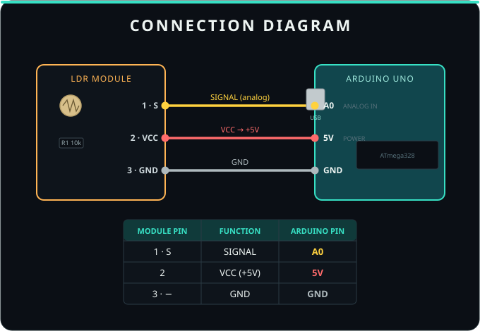
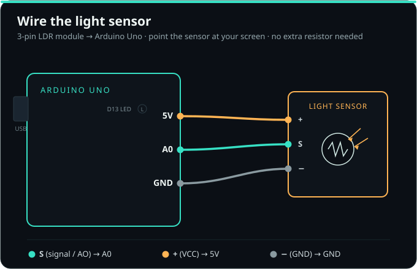

Put the BeamClaw firmware on your Uno in one click, no Arduino IDE. After this you never flash again — you change behaviour by light.
Plug the Uno in via USB and click. Works in desktop Chrome or Edge. It's a one-time step — after this you beam new behaviours from any device, by light. The firmware is built into this page (nothing to download).
Board not showing up, or it won't connect? Fix it →
A 3-pin LDR module: S to A0, + to 5V, − to GND. Point it at your screen, then open the console and beam a behaviour.

Pins on cheap modules vary — match by function: signal/AO to A0, VCC/+ to 5V, GND/− to GND.

115200 should show == BeamClaw AGENT VM v2 ==. Wire the LDR, then beam a behaviour.Advanced: prefer avrdude? Grab the compiled beamclaw_agent.hex.
In-browser flashing uses the Web Serial API (desktop Chrome/Edge). Your firmware never leaves your machine — it's pushed straight over USB.